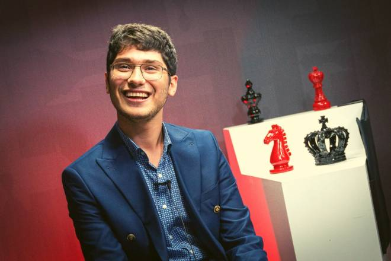

Grand Chess Tour
Les joueurs du Grand Chess Tour
La liste des joueurs du Grand Chess Tour, prestigieux circuit organisé en cinq tournois de mai à décembre, vient d'être dévoilée par les organisateurs. Deux Français, Alireza Firouzja et Maxime Vachier-Lagrave, y figurent.
Si toi aussi, tu espères un jour pouvoir y participer nous avons ce qu'il te faut !
Moi aussi !
Nouvelle vidéo !
Analyse exclusive !
Kevin analyse la dernière partie du numéro 2 mondiale Ding contre le numéro 3 mondiale Nepomniachtchi